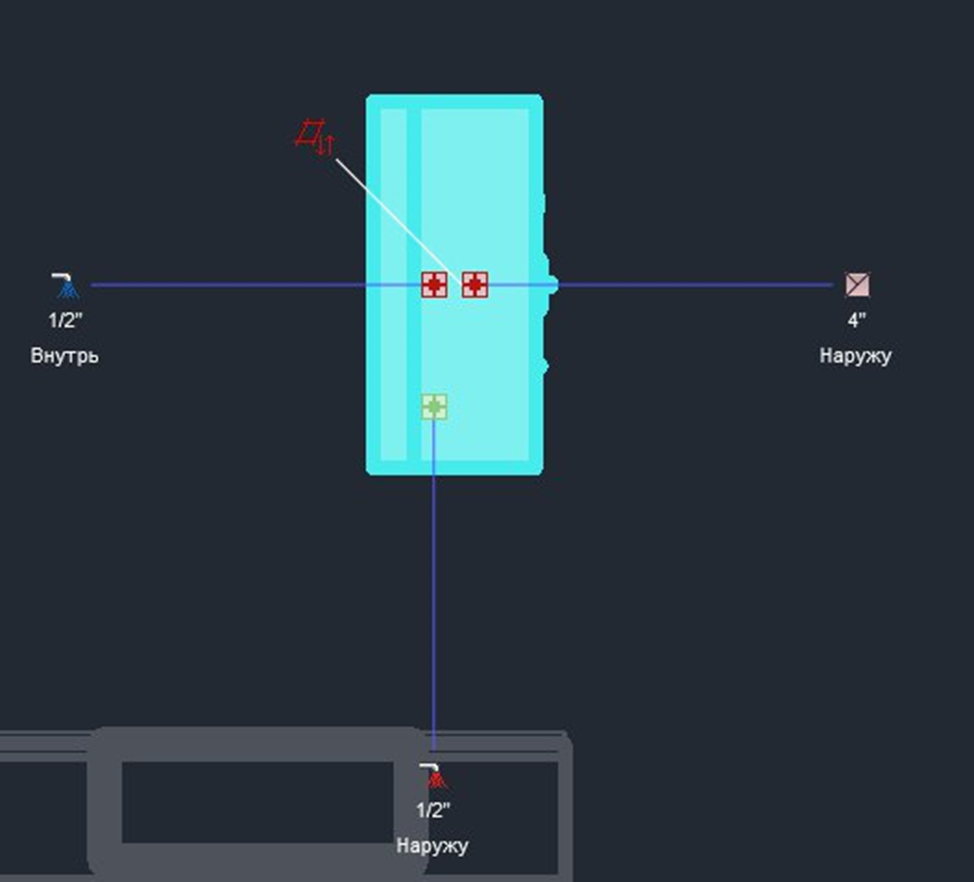

Выдача заданий смежным разделам. Как связать проект в единое целое

Главное правило инженера: любое оборудование, которое вы ставите в проект, требует ресурсов. Ваша задача – сообщить об этом «поставщику» ресурса.
Матрица взаимодействий: кто, кому и что выдает?
Мы должны думать проактивно. Не ждите, пока вас спросят. Используйте этот чек-лист при работе над любым объектом.
Выдача заданий Электрикам (ЭОМ/ЭМ)
Кто выдает: ОВ, ВК, ТХ (Технологи), АХТ (Холод), СС (Слаботочка).
Электрику все равно, качает ваш насос воду или нефть. Ему нужны параметры нагрузки.
| Что выдаем | Детализация (Что писать в задании) |
| Точка подключения | Точное расположение оборудования на плане (с привязками). |
| Электрическая мощность | Установленная (Ру, кВт) и Расчетная (Рр, кВт) мощность. |
| Напряжение и фазность | 220В (1 фаза) или 380В (3 фазы). Это критично! |
| Категория надежности | Нужен ли резервный источник питания (ДГУ, ИБП)? (Например, для пожарных насосов - I категория). |
| Режим работы | Длительный, кратковременный, периодический (влияет на выбор кабеля). |
| Тип управления | Пульт местный, пульт дистанционный, шкаф автоматики (кто его поставляет - вы или электрик?). |
Выдача заданий Конструкторам (КР/КЖ/КМ)
Кто выдает: Все инженерные разделы (ОВ, ВК, ЭОМ, СС) + Архитекторы.
Конструктор отвечает за то, чтобы здание было безопасным. Вы – главная угроза для здания (делаете отверстия в стенах и перекрытиях, ставите оборудование).
| Что выдаем | Детализация (Что писать в задании) |
| Отверстия и проемы | Размеры (B x H), отметка низа отверстия, привязка к осям. Важно: учитывайте зазор на изоляцию и монтаж (+50-100 мм к размеру трубы/короба). |
| Нагрузки от оборудования | Вес оборудования (сухой и рабочий - с водой). Точные места опирания (ножки, рама). |
| Крепления и закладные | Если вешаете тяжелые трассы к перекрытию - укажите точки подвеса и нагрузку на точку. |
| Фундаменты | Под насосы, котлы, чиллеры. Габариты и требования к виброизоляции. |
| Штрабы | Если прячете трубы/кабели в стену - укажите глубину и ширину штрабы. |
Выдача заданий Автоматчикам (АК/АОВ/АТХ)
Кто выдает: ОВ, ВК, ТХ.
Автоматчик – это «мозг» системы. Он не знает, как работает ваша система, пока вы не напишете.
| Что выдаем | Детализация (Что писать в задании) |
| Таблица сигналов | Что нужно измерять (температуру, давление, влажность). |
| Исполнительные механизмы | Чем нужно управлять (клапан открыть/закрыть, насос включить/выключить, частотник 0-100%). |
| Алгоритм работы | Описание логики: "При падении давления ниже X бар, включить насос №2". |
| Размещение датчиков | Места для врезки гильз под термометры/манометры на схемах. |
Выдача заданий Архитекторам (АР)
Кто выдает: Все инженеры.
| Что выдаем | Детализация |
| Шахты и ниши | Требования к размерам шахт для стояков. Не забывайте про доступ для обслуживания! |
| Помещения | Требуемая площадь венткамер, электрощитовых, ИТП. Категория пожарной опасности помещений. |
| Полы и трапы | Задание на уклоны пола к трапам (для ВК), конструкции "плавающих полов" (для шумоизоляции венткамер). |
| Фасад | Решетки воздухозабора/выброса, наружные блоки кондиционеров (размеры, цвет, привязки). |
Как выдавать задания: Инструменты
Задание – это не устная просьба «Подключи насос, пожалуйста». Это документ, который фиксирует ответственность.
Способ 1. Работа в Revit (BIM-подход) – Уровень «Профи»
Revit создан для координации. Если вы просто чертите в нем как в AutoCAD, вы теряете 80% пользы.
1. Задания на отверстия (Плагины + Семейства)
Проблема: Рисовать отверстия вручную долго, и они не двигаются вместе с трубой.
Решение: Используйте семейство «Задание на отверстие» (обычно кубик или цилиндр категории «Обобщенные модели»).
Используйте плагины (ModPlus, BIMStep и др.). Сейчас много инструментов для быстрой простановки отверстий по заданным параметрам.
- Инженер ОВ расставляет семейства отверстий в местах пересечения стен.
- Эти семейства содержат параметры: Размер, Отметка, ID инженера.
- Конструктор подгружает связь ОВ, запускает плагин «Принять отверстия», и они вырезаются в стенах или превращаются в отверстия КР.
2. Электрические коннекторы (Smart-семейства)
Как это работает: В семействе насоса или вентустановки должен быть настроен «Электрический соединитель».

Что прописать: В параметрах экземпляра вы вбиваете: Напряжение (380), Активная мощность (Вт), Коэффициент мощности (cos f).
Магия: Электрик, подгружая вашу модель, может «подцепиться» к вашему оборудованию. Он увидит нагрузку в своем щите автоматически. Если вы поменяете мощность насоса, у электрика в цепи данные обновятся.
3. Пространства (Spaces) для ОВ и ЭОМ
Архитектор создает «Помещения», а инженер ОВ ставит «Пространства» (Spaces), которые считывают данные из помещений.
В свойствах пространства ОВ указывает: «Требуемая освещенность», «Тепловыделения от оборудования». Электрик видит эти данные.
4. Copy/Monitor (Копирование/Мониторинг)
Инструмент для отслеживания изменений.
Например, ВК выдает задание на расстановку сантехники. Архитектор расставляет унитазы. Инженер ВК через «Копирование/Мониторинг» забирает их себе. Если Архитектор подвинет унитаз, Revit выдаст предупреждение инженеру ВК.
Способ 2. Работа в AutoCAD (Классика) - Уровень «База»
Если BIM нет, нужен жесткий порядок слоев и ссылок.
- Внешние ссылки (Xref): Никогда не копируйте планировки архитекторов в свой файл. Подгружайте их ссылкой.
- Слой «ЗАДАНИЕ»: Создайте отдельный слой (например, OV_ZADANIE_ELECTRO или OV_HOLES). Рисуйте задания только на нем.
- Облака изменений: Если вы выдаете задание повторно с изменениями, обязательно обводите новые места «облаком» (Revision Cloud) и ставьте треугольник с номером изменения. Смежники ненавидят искать «10 отличий».
- Текстовая таблица на листе: Рядом с планом насосной станции разместите таблицу Excel (вставленную связью OLE или просто линиями):
Поз. на плане | Наименование | Pу, кВт | I ном, А | Примечание.
Способ 3. Универсальные методы (Excel + PDF)
Иногда проще и надежнее выдать таблицу нагрузок в Excel.
- Таблица нагрузок (для ЭОМ): Excel-файл, где прописаны все ваши двигатели. Это удобно для электрика, он копирует данные в свои расчеты.
- Скриншоты/PDF с пометками: Для быстрых уточнений (например, «Сдвинь этот лоток на 100 мм вправо»). Используйте инструменты пометок в PDF-XChange или Bluebeam.
Главные боли и лайфхаки (без воды)
1. Проблема «Курицы и яйца»
Электрик не может начать, пока нет задания от ОВ. ОВ не может закончить, пока нет планировок от АР. АР ждет шахты от ОВ.
- Решение: Выдача предварительных заданий.
- На стадии «П» выдавайте нагрузки с запасом +20% или согласно ЗнП. В электрике лучше заложить кабель толще, чем пересчитывать проект за день до сдачи.
- Пишите на чертеже крупно: «ПРЕДВАРИТЕЛЬНОЕ ЗАДАНИЕ ДЛЯ ТЭО».
2. Границы ответственности
Самый частый спор: кто учитывает шкаф управления насосом - ЭОМ или ВК?
- Правило: Обычно шкаф управления поставляется комплектно с оборудованием (раздел ВК/ОВ). Электрик только подводит кабель питания к шкафу.
- Действие: Четко пропишите в задании: «Шкаф управления – раздел ЭОМ. Подвод питания выполнить к вводному автомату шкафа».
Забытые потребители
На что часто забывают выдать задание:
- Электроприводы клапанов (Огнезадерживающих клапанов ОЗК, клапанов дымоудаления). Их сотни, к каждому нужно питание 220В/24В и сигнал.
- Греющие кабели (для труб водостока или водопровода на улице).
- Фанкойлы (каждому нужно питание и дренаж в канализацию).
- Бытовые розетки для обслуживания (в венткамерах и ИТП нужны розетки 220В для подключения инструмента).
Для вас мы подготовили примерный перечень выдачи заданий инженерами архитекторам и конструкторам и наоборот.
Перед передачей заданий смежникам проверьте, что:
- Все данные соответствуют актуальной версии проекта.
- Задания оформлены в соответствии с принятыми в организации стандартами.
- Учтены требования нормативных документов.
- Предусмотрены резервы по нагрузкам и габаритам.
- Задания согласованы с главным инженером проекта.
- Определены сроки получения ответных данных от смежных разделов.
Проверочные карточки 2
Карточка 1

Что является основной целью выдачи заданий смежным разделам?
- Формальное выполнение требований ГОСТ
- Обеспечение интеграции инженерных систем и предотвращение коллизий
- Ускорение процесса подписания документации
- Сокращение количества совещаний
Ответ и пояснение
Ответ в исходных данных: Обеспечение интеграции инженерных систем и предотвращение коллизий
. Источник и ограничения. Проверка ответов, анимация и серверные функции недоступны в статической копии.